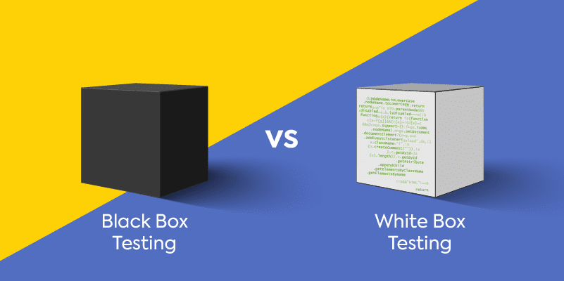

Software Testing
Table of Contents
- Foundations of Testing
- Software Testing Life Cycle (STLC)
- Unit Testing
- JUnit
- Dependencies Using Doubles
Foundations of Testing

Software testing are the techniques to execute programs with the intent of finding as many defects as possible and/or gaining sufficient confidence in the software system under test.
Test Case & Test Suite
- Test Case: Is a set of inputs and the expected outputs for a system under test.
- Test Suite: Is a set of test cases.
Without the expected outputs, a test case is not complete.
- Direct Input Variable: A variable that controls the operation directly. Example: arguments, entered data, selection menu, etc.
- Indirect Input Variable: A variable that only influences the operations or its effects are propagated to the operation. Example: traffic load, environment variables, etc.
Types of Test Activities
- Test-Case Design - Exploratory (human-based): Design test values based on domain knowledge of the program and human knowledge of testing, exploratory testing.
- Test-Case Design - Criteria-based: Design test values to satisfy coverage or other engineering goal.
- Test-Case Automation: Embed test values into executable scripts.
- Test-Case Execution: Run tests on the software and record the results.
- Test-Case Evaluation: Evaluate the results of the testing, report to developers.
Software Testing Life Cycle (STLC)

- Requirement Analysis
- Test Planning
- Test Case Development
- Environment Setup
- Test Execution
- Test Cycle Closure
Requirements Analysis
The process of analyzing the requirements from testing point of view to identify the testable requirements.
Requirements could be either:
- Functional: Defining system software must do.
- Non-Functional: Defining system performance, security, availability, etc.
Test Planning
The process of defining the test strategy, test objectives, test estimation, test deliverables, test schedule, and test environment setup.
Test Case Development
The process of developing test cases based on the test basis.
Environment Setup
The process of setting up the test environment to execute the test cases.
Test Execution
The process of executing the test cases and recording the results.
Test Cycle Closure
The process of analyzing the test results, test logs, test reports, and test metrics obtained from the test execution phase to identify the test closure criteria.
Unit Testing
Ensure that each unit (i.e. subsystem, class or method) in isolation has been implemented correctly. Each method looks for a particular result and passes/fails. Often based on white-box testing.
Characteristics
- A unit test must only test one specific unit of functionality (i.e class or method).
- It is fast to execute.
- It does not access a database or a file system.
- It does not communicate via a network.
- It does not require any special set up to the system environment such as modifying a configuration file.
- It leaves the system and the system environment in the same state that it had prior to the test.
- Focus on developed components only.
What to test?
- Focus on developed components and surroundings
- One sample form each equivalent class of input data
- Invalid data
- Boundaries
When to test?
- Waterfall: Typically written as the system has been developed.
- TDD: Each unit test is written before or during the corresponding code being written.
Best Practices
- Each test should test one thing only.
- Each test method should have few assert statements.
JUnit

- Java testing framework used to write and run tests
- Open source
- Helps test execution automation
Terminology
- Test Drivers: Modules that act as temporary replacement for a calling module and give the same output as that of the actual product.
- Test Execution: The execution of an individual unit test procedure.
@BeforeEach // Optional (setup)
@Test // Required (test case)
@AfterEach // Optional (cleanup)
- Test Result Formatter: A test runner produces results in once or more output formats, e.i. text, XML, HTML, etc.
- Assertions: An assertion is a function or macro that verifies the behavior (or state) of the unit under test.
import static org.junit.Assert.*; // Import all static assert methods
public class TestClass {
@Test
public void testMethod() {
assertEquals(1, 1); // Compare two values
assertNotEquals(1, 2); // Compare two values
assertTrue(true); // Check if true
assertFalse(false); // Check if false
assertNull(null); // Check if null
assertNotNull(1); // Check if not null
assertSame(1, 2); // Check if object is same
assertNotSame(1, 1.5); // Check if object not same
fail("Not yet implemented"); // Fail test
}
}
JUnit Test Class
- A method with
@Testis flagged as JUnit test case. - All
@Testmethods run when JUnit runs your test class.
import org.junit.Test;
public class TestClass {
@Test
public void testMethod() {
// Test method
}
}
JUnit Test Suite
- A test suite is a collection of test cases.
- The suite construction is done by using
@RunWithand@Suiteannotations.
package com.example.tests; // Optional for running tests in command line
import org.junit.runner.RunWith;
import org.junit.runners.Suite;
@RunWith(Suite.class)
@Suite.SuiteClasses({
TestClass1.class,
TestClass2.class
})
public class TestSuite {}
JUnit Test Runner
- Create a java class file named
TestRunner.java. - Compile all the java classes using
javaccompiler. - Run the
TestRunnerclass usingjavacommand.
import org.junit.runner.JUnitCore;
import org.junit.runner.Result;
import org.junit.runner.notification.Failure;
public class TestRunner {
public static void main(String[] args) {
Result result = JUnitCore.runClasses(TestSuite.class);
for (Failure failure : result.getFailures()) {
System.out.println(failure.toString());
}
System.out.println(result.wasSuccessful());
}
}
JUnit 5
import static org.junit.Assert.*;
import org.junit.Before;
import org.junit.After;
import org.junit.Test;
public class TestClass {
Tournament tournament;
@BeforeEach // Optional (setup)
public void before() throws Exception {
System.out.println("Before");
tournament = new Tournament(100, 60);
}
@Test // Required (test case)
public void testGetBestTeam() {
assertNotNull(tournament);
Team team = tournament.getBestTeam();
assertNotNull(team);
assertEquals(100, team.getPoints());
}
@AfterEach // Optional (cleanup)
public void after() throws Exception {
System.out.println("After");
tournament = null;
}
}
Annotations
Additional annotations for JUnit 5.

Ignoring a Test
Use @Ignore annotation to ignore a test.
import org.junit.Disabled;
@Disabled("Disabled until bug #99 has been fixed")
@Test
public void testMethod() {
// Test method to be ignored
}
Timeouts
Use timeout parameter added to @Test annotation, with timeout parameter you can specify a value (in milliseconds) that you expect to be the upper limit of the time you spend executing your test.
import org.junit.Test;
@Test(timeout = 1000) // 1000 milliseconds
public void testTimeout() {
// Test method
}
Expected Exceptions
To catch (expected) exceptions thrown by JUnit tests, use @Test annotation's expected parameter.
import org.junit.Test;
@Test(expected = NotFoundException.class)
public void testNotFoundException() throws NotFoundException {
// Test method
}
Data Driven Testing
Data driven unit tests call a constructor for each collection of test values.
import org.junit.Test;
import org.junit.runner.RunWith;
import org.junit.runners.Parameterized;
import org.junit.runners.Parameterized.Parameters;
import static org.junit.Assert.assertTrue;
@RunWith(Parameterized.class) // Parameterized test runner
public class TestClass {
private int a;
private int b;
private int sum;
// Constructor
public TestClass(int a, int b, int sum) {
this.a = a;
this.b = b;
this.sum = sum;
}
@Parameters // Creating the set of test values
public static Collection<Object[]> parameters() {
return Arrays.asList(new Object[][] {
{ 1, 1, 2 }, // Test 1
{ 2, 2, 4 }, // Test 2
{ 3, 2, 5 }, // Test 3
{ 4, 3, 7 }, // Test 4
{ 5, 3, 8 } // Test 5
});
}
@BeforeAll // Setup
public static void setUpCalculator() throws Exception {
calculator = new Calculator();
}
@Test // Test case
public void testAdd() {
assertTrue("Addition Test", this.sum == calculator.add(this.a, this.b));
}
@AfterAll // Cleanup
public static void tearDownCalculator() throws Exception {
calculator = null;
}
}
Dependencies Using Doubles

- Typically SUT (system under test) has dependencies.
- Unit tests should not have dependencies.
- If the SUT collaborates with any others classes, those classes are referred to as
depended on components(DOC). - A test double is a replacement for a DOC.
Example:
- A system might send an email to a user.
- Since we do not want to send an email to a user every time we run a test, we use a test double to replace the email sending component.
- We want to verify that the system sends an email to the user.
NOTE: External dependencies MUST be removed from unit testing.
Stubs
- Is a fake class that comes with preprogrammed return values
- It's injected into the class under test to give control over what's being tested as input.
- Supplies responses to requests from the SUT.
Example:
- A database connection that allows you to mimic any connection scenario without having s real database.
Test Lifecycle with Stubs
- Setup: Prepare SUT that is being tested and its stubs collaborators. Usually in
@BeforeAllmethod. - Exercise: Test the functionality. Usually in
@Testmethod. - Verify State: Use asserts to check object's state.
- Teardown: Clean up resources. Unsually in
@AfterAllmethod.
Mocks
- A fake object that decides whether a test has passed or failed by watching interactions between objects.
- Dummy implementation of an interface or class in Mock framework.
- Needed when a unit of code under test depends upon an external object.
Example:
- You can ask it whether a method was called or how many times it was called. Typically mocks are classes with side effects that need to be examined.
Test Lifecycle with Mocks
- Setup Data: Prepare object that is being tested.
- Setup Expectations: Prepare expectations in mock that is being used by primary object.
- Exercise: Test the functionality.
- Verify Expectations: Verify that correct methods have been invoked in mocks.
- Teardown: Clean up resources.
Mockito
- Is a mocking framework for Java.
- Auto-generation of mock objects that implement a given interface.
- Logging of what calls are made to the mock objects.
// GradesService.java
public class GradesService {
private final Gradebook gradebook;
public GradesService(Gradebook gradebook) {
this.gradebook = gradebook;
}
Double averageGrades(Student student) {
return average(gradebook.gradesFor(student));
}
}
// GradesServiceTest.java
import static org.mockito.Mockito.*;
import static org.junit.Assert.*;
import org.junit.*;
public class GradesServiceTest {
private Gradebook gradebook;
private Student student;
@BeforeAll // Setup
public static void setUp() {
this.gradebook = mock(Gradebook.class);
this.student = new Student();
}
@Test // Test case
public void testAverageGrades() {
when(gradebook.gradesFor(student)).thenReturn(grades(9.0, 8.0, 7.0));
GradesService gradesService = new GradesService(this.gradebook);
Double average = gradesService.averageGrades(this.student);
assertEquals(8.0, average);
}
@AfterAll // Cleanup
public static void cleanUp() {
this.gradebook = null;
this.student = null;
}
}
mock()method takes a class or an interface as an argument and creates a mock object of given class or interface.when()method takes a method call on mock object as an argument and defines return value for that method call.thenReturn()method defines return value for the method call. If you specify more than one value, they will be returned in sequence until the last one is used.
Black Box Testing

Black Box testing applies at all granularity levels of testing.
-
Unit Testing: From module interface specification.
-
Integration Testing: From the API or subsystem specification.
-
System Testing: From the system specification.
-
Regression Testing: From system requirements + bug history.
Equivalent Class Testing (ECT)
-
You divide the set into partition that can be considered the same.
-
Partitions of input space in such a way that input data have the same effect on the system.
-
They all test the same unit (method, class, etc).
-
Entire input set is covered by the test cases.
-
They entire set of inputs can be divided into
Expected (E)andUnexpected (U)inputs.
Weak / Strong ECT
- Weak Equivalence Class Testing (one-dimensional): Choosing one variable value form each equivalence class (one A, B, and C) such that all classes are covered.
max(|A|, |B|, |C|)
Example:
- A = {1, 2, 3, 4}
- B = {5, 6}
- C = {7, 8, 9}
max(4, 2, 3) = 4
- Strong Equivalence Class Testing (multi-dimensional): Based on the Cartesian product of the partition subsets (A x B x C). Testing all interactions of all equivalence classes.
|A| x |B| x |C|
Example:
- A = {1, 2, 3, 4}
- B = {5, 6}
- C = {7, 8, 9}
4 x 2 x 3 = 24